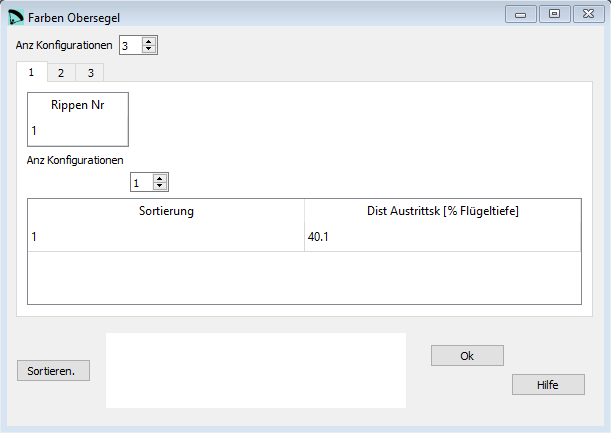

Farben Obersegel¶
Wenn Du verschiedene Farben im Obersegel verwenden willst, kannst Du hier Schnittmarken definieren.
{kind=link}
Rohdaten:
*****************************************************
* 15. Extrados colors
*****************************************************
3
1 1
1 40.1 0.
2 1
1 20.15 0.
3 1
1 0.0 0.

Definition der Farbmarkierungen¶

Und die Markierungen auf dem Plan¶
Anz Konfigurationen¶
Farben Obersegel ist eine optionale Konfiguration.
Wenn Du keine Farbmarkierungen verwenden möchtest, dann setze den Wert von Anz Konfigurationen auf 0.
Rippen Nummer¶
Die Rippen Nummer für die aktuelle Konfiguration.
Dist Austrittskante¶
Die Distanz der Markierung von der Austrittskante in [% Flügeltiefe].
Sortieren¶
Mit der Schaltfläche Sortieren können die Zeilen neu angeordnet werden. Wenn das gemacht werden soll kannst Du die neuen Nummern in der ersten Spalte einsetzten und anschliessend mit der Schaltfläche die Tabelle neu sortieren.
Eine detaillierte Beschreibung in englisch findest Du auf der Laboratori d'envol website.